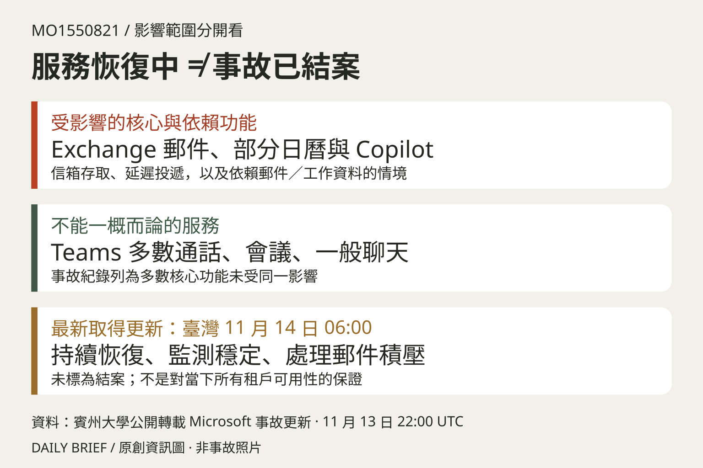

TECHNOLOGY / THE ESSENTIALS
Microsoft 365 大規模中斷後持續恢復，事故尚未結案
收錄於 2026-11-14 日報 · 賓州大學公開轉載 Microsoft 事故紀錄
影響與目前進展
- Microsoft 365 套件事故 MO1550821 記錄起於 11 月 12 日 18:26 UTC（臺灣 13 日 02:26）；這是套件事故時間，不能當作所有產品的共同起始時間。Outlook／Exchange 信箱與郵件投遞、部分日曆與 Copilot 工作資料功能受影響。
- 賓州大學公開轉載的 Microsoft 最新取得更新為 11 月 13 日 22:00 UTC（臺灣 14 日 06:00）：服務持續恢復，但仍須延長監測並確認積壓郵件處理，事故尚未標為結案。
不要把影響範圍放大
- 紀錄指出 Teams 通話、會議及一般聊天等多數核心功能不在同一影響範圍，依賴 Exchange 的排程等情境才受波及；不能簡化成所有 Teams 功能全部中斷。
- 企業應核對自身租戶狀態、郵件投遞與業務備援。最終根因仍未在該紀錄公布；沒有證據就不能稱為網攻，也不能把局部恢復當成全面正常。

原文與查核
以上為整理與解讀，重要細節請回到原文核對。
- 賓州大學公開轉載 Microsoft 事故紀錄 ↗發布 2026-11-13 · 查核 2026-11-14T09:12:10+08:00
- BleepingComputer 現場報導與更新 ↗發布 2026-11-12 · 查核 2026-11-14T09:12:10+08:00